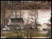
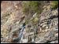
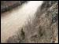
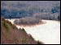
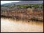
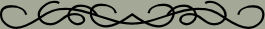

|





These five pictures were taken along the Delaware River,
just north of Port Jervis, in 2005. We had a flood last
spring, so the river is a little bit higher than usual.
If you want to see the larger version of these pictures,
just click on any one of them to open the larger picture
in a separate window. Just close the window when you
are done looking at it to return to this page.
The next button will take you to a collection of five
summer pictures, back takes you back to the main page
for this lesson.

|
|
Graphics and text Copyright
© 2006, Irene Smith. All rights reserved.
The JavaScript that
creates the mouse trail came from mf2fm
web-design
The JavaScript to pop up the image window came from
HotScripts.com.
The script is called the Thumbnail Popup Scripting Engine.
The script is free for use as long as the comments are
left intact.
|